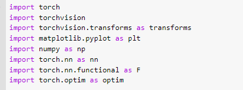
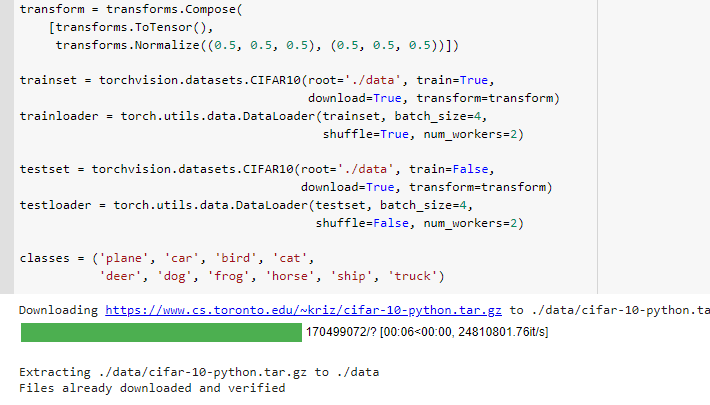
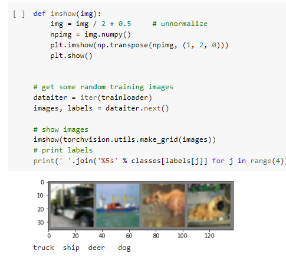
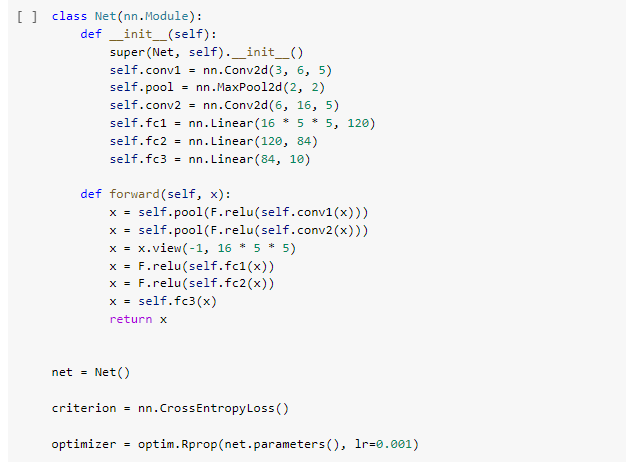
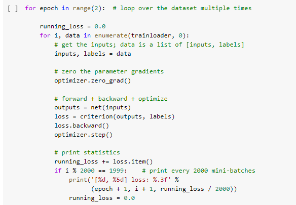
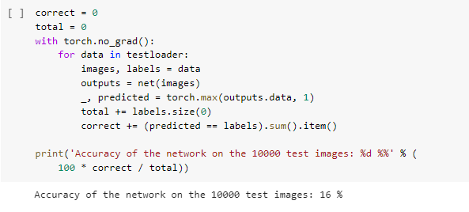

Contributions
I have applied all the various optimizers to the model and run them indivisually to find out which optimizer had the best accuracy.
After the best optimizer (Adamax in my case ) was decided I have tried to change the hyperparameters as suggested in the instructions of the assignment
I have increased the Fully Connected layer (from fc(3 to fc(4)))
I have changed the number of neurons per layer and thus increased the accuracy from 55% to 76%
Challenges
The challenges i faced was how to change the number of neuron and shape of conv 2d inorder to attain the maximum accuracy possible.
I did increase the accuracy to 63% by changing the epoch to 15
But even after I changed the Conv2d i had a lot of errors. at this time the reference below helped me push the value to 70% accuracy.
Ater this I tweeked a few more values apart from the reference and also increased the fully connected layer (fc(4)) from which the accuracy rate hit 76%.
Visualization Benefits.
The visualization helped me find the best optimizer to use , based on the accuracy and runtime.
In my case I had a tie between Adam and Adamax with 55% accuracy , that is when I had to plot the run time to figure out the best optimizer.
When I changed the epoch to 15 Adamax had a slightly higher accuracy than the Adam optimizer.
This is easily deducable from the above bar graphs.
Explanation o the basic algorithm

At the beggining we import the data sets of Cifar 10 through the torchvision package. If we are working on any other platform other than pytorch
we can use the import torch package to run it on google colab / kaggle.

The train and test data are loaded

This function is to load 4 random images using the trainloader to see what kind of images are there in Cifar-10

We now build the Convolution neural network by using 2 - Conv- Convolution layer, 2- Relu- Activation function , pooling-layer , 3 - FC - fully Connected layer
Below which we define the optimizer and loss function for the optimizer.

This funtion is to run the model for the defined number of times to reduce the loss.
Suppose if epoch is 2 and limit is 12000 then the model will run from (1,2000) to 2(12,000) with 2000 intervals in between them.
Here the loss of the training model is calculated ad will show the model so that we know how to reduce the loss.

Predicting the accuracy for the test dataset based on the loss obtained from the training dataset

Here we get the matrix that includes accuracies o all images from which we can conclude how our model has worked.
References
Pytorch Tutorial.
optimizer usage.
Stefanfiott for CNN changes .
Links
Jupyter-notebook for all codes.
Github link for the blog post
My portolio